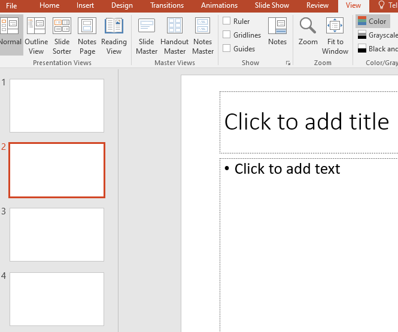
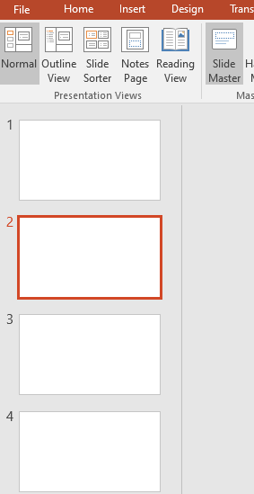
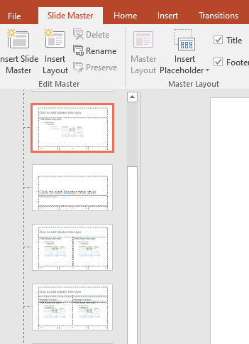
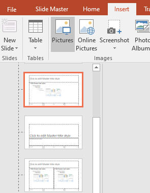
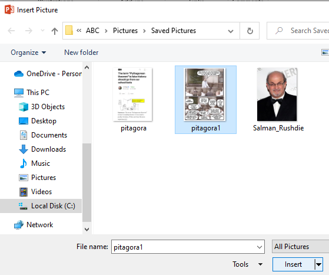
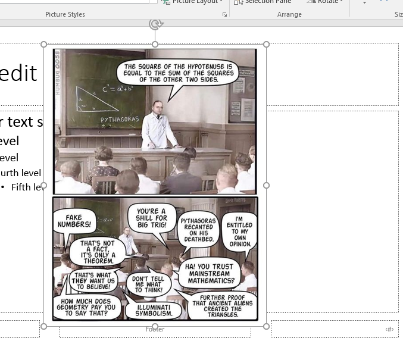
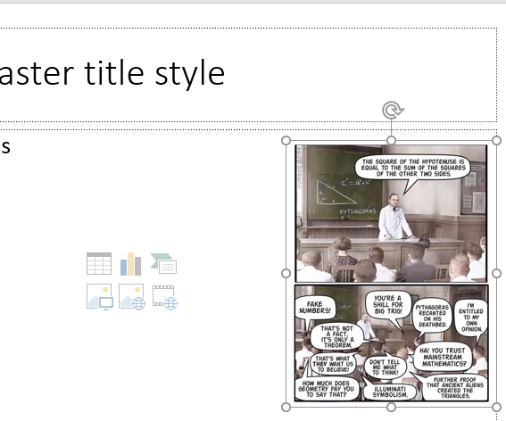
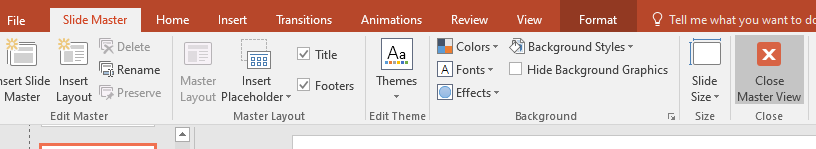
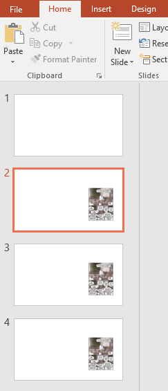
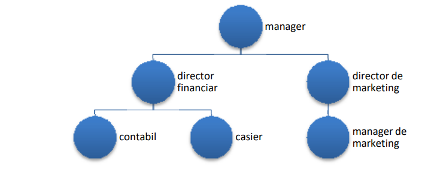

Fişa nr.6
Pentru a adăuga aceeași imagine la toate diapozitivele din PowerPoint, puteți adăuga imaginea la coordonatorul de diapozitive. Iată pașii pentru a face acest lucru:
- Deschideți prezentarea PowerPoint,
- Faceți clic pe fila Vizualizare (View):

- Faceți clic pe Coordonator Diapozitive (Slide Master):


- Faceți clic pe butonul Inserare imagine și selectați imaginea pe care doriți să o adăugați:



- Redimensionați și poziționați imaginea:

- Faceți clic pe butonul Închidere vizualizare master pentru a ieși din coordonatorul de diapozitive:

Imaginea va apărea acum pe toate diapozitivele din prezentare. Dacă doriți să eliminați imaginea dintr-un anumit diapozitiv, o puteți șterge pur și simplu din diapozitivul respectiv:

APLICAŢIE
- Porniţi aplicaţia pentru prezentări, deschideţi o nouă prezentare.
- Primul diapozitiv va fi de tip titlu şi va conţine titlul „Călătorul” şi subtitlul „Firmă de transport intern şi extern”.
- Adăugaţi un al doilea diapozitiv care va fi de tip titlu şi text. Titlul – „Trasee”. Textul va conţine:
Suceava-Roma
Suceava- Madrid
Suceava-Paris
Suceava-Londra
Aplicaţi un efect de animaţie titlului şi marcatori, la alegere, pentru fiecare din trasee.
- Adăugaţi un nou diapozitiv ”Preţuri” în care inseraţi un tabel cu preţul dus-întors al călătoriilor:
| Ruta | Adulţi | Copii | Pensionari |
| Suceava-Roma | 90€ | 30€ | 45€ |
| Suceava-Madrid | 150€ | 50€ | 75€ |
| Suceava-Paris | 130€ | 40€ | 65€ |
| Suceava-Londra | 180€ | 60€ | 90€ |
- Folosind datele din diapozitivul precedent, adăugaţi în următorul diapozitiv o diagramă de tip
coloană, pe fiecare din acestea fiind afişate valorile.
- În următorul diapozitiv ”Organigrama” realizaţi organigrama firmei de transport

- Inseraţi un nou diapozitiv ”Cuprins” care să conţină cuprinsul prezentării. Mutaţi diapozitivul pe
poziţia 2 în prezentare.
- Inseraţi o singură dată, folosind o funcţie specială, în colţul din dreapta jos imaginea următoare
astfel încât aceasta să apară pe fiecare diapozitiv:
- Adăugaţi întregii prezentări o temă aleasă de voi şi aplicaţi un efect de tranziţie
întregii prezentări. Salvaţi fişierul cu numele vostru "Nume_Prenume.pptx".